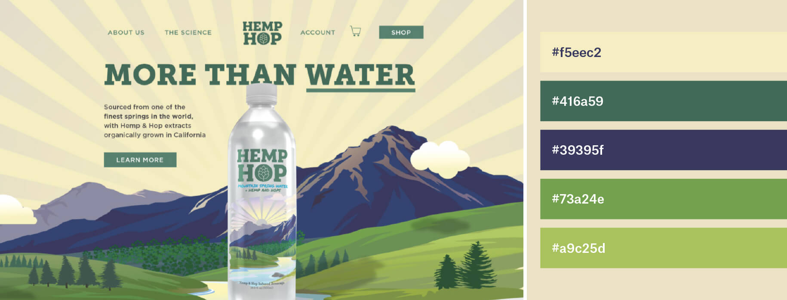
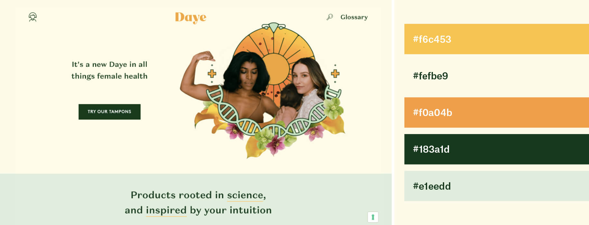
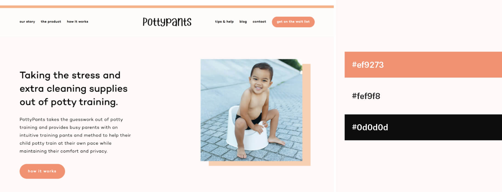
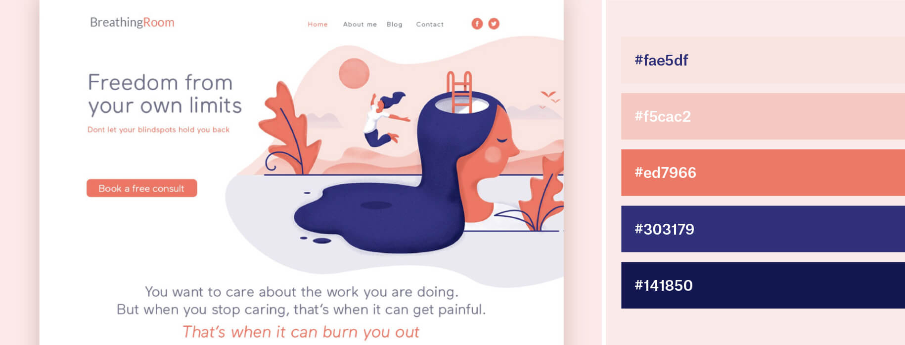
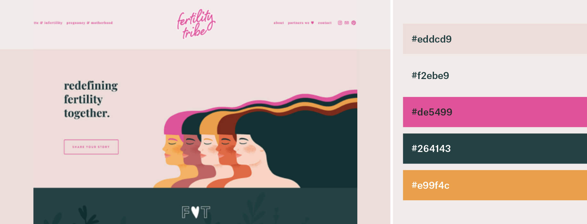

When setting out to design a website, a top priority is perfecting your website's color palette. The best way to do this is to look at existing websites and to research competitors, so we've done the leg work for you and compiled a list of 11 website color schemes that work perfectly for each brand.
But, hang on a minute. What if you already have a website color palette in mind that you know you want to use? Well, sure, that's a great start but it's important to consider what you want your website color scheme to say before rushing into anything…
Considering color psychology for website color schemes
Take the fine artist, Josef Albers. A master of color, he devoted his practice to understanding color and how it affects the onlooker’s mood and adapts into different contexts. A huge part of his research involved looking at the various ways colors interact with each other. Take, for example, his painting below: the combination of dark green and orange feels jarring to look at, whereas in pairing the green with a grey, Albers creates balance with much calmer, contemporary mood for the audience.
Findings like his can be used to inform design choices; they’ll help you to choose web design colors to suit your services and accentuate your brand identity for communicating it to consumers.
This conversation constitutes an introduction into color psychology, meaning the study of colors and how they affect us on a cerebral level. As Mark Rothko exhibited with his namesake Color Field paintings, certain colors demand certain reactions. So, when we’re considering website color schemes, it’s important to recognise how different tones and hues affect our mood. For example, if we were to design a website for a sustainability charity then we might use shades of green and blue because they invoke feelings of trust, nature and health.
“Adopting the perfect color palette for your website establishes a positive perception and consumer.”
Not only can you use certain color schemes to influence people’s mood but you can also use it to control how they perceive your website. Exactly why has Facebook always stuck to its blue color scheme? Is it really because Mark Zuckerberg is red-green color blind, meaning blue appears extraordinarily vivid for him? Well, yes, but also because blue is the most universally-loved color. In fact, blue appears in over half of all logos. With that in mind, let’s take a look at the basic psychological principles of all key colors:
- Red: speed, energy and passion. Red’s a great color to use when you want your audience to take action. Red is often used for ecommerce website color schemes as well as restaurants and takeaway apps—when you’re hungry and ordering a takeaway, you passionately want your food fast!
- Orange: optimism and happiness. Orange is universally seen as a “fun” color and using it in your web design is a great way to show you don’t take yourself too seriously.
- Yellow: warmth, an inviting feeling, positivity. The color of sunshine, yellow is associated with happiness and joy. Super cheerful and accessible. This is a great website color to use for service industries—you’re happy to help!
- Green: nature and health. Calming and natural, green is the perfect choice for a color scheme when designing for a healthy brand. Green is also a great color choice to convey eco-friendliness and sustainability.
- Blue: the most versatile and universally liked. Blue has been shown to inspire feelings of trust, making it a heavy favorite in website color schemes.
- Purple: creativity, wisdom and confidence. Purple is a unique, strong color to use within a website color scheme as it demands attention and stands out.
- Pink: creativity and exuberance. Pink is having the time of its life at the minute, more than ever it’s being embraced by people of all genders and identities, meaning brands are following suit and incorporating it into a range of industries.
- Brown: wholesomeness, warmth and honesty. When used in web design, brown is a comforting color. It gives websites a natural, down-to-earth vibe and often goes hand in hand with traditional, vintage-inspired designs.
- Black: modernity, sleek, neutral. Its minimalism is great for luxury websites; many cosmetic brands adopt black as their key color to signify that their product is quality, which possibly helps you justify spending so much..?
- White: minimalism, transparency. Sometimes the best color choice for minimal web design is no color at all. White is a neutral shade, which means it can easily be combined with other colors for branding purposes. It is primarily used as an accent or background color.
- Gray: maturity, authority. If you’ve got a more serious website, gray is a great color choice, it shows people you mean business.
11 beautiful website color schemes to inspire you
-Ok, so we seem to enjoy attributing emotional and human traits to colors. Brands use these abstract associations to establish emotional connections with people, which helps them gain and retain more consumers or clients. When you’re choosing your website color palette you can use these associations to your advantage. To help us explain, we scoured the web for 11 concrete examples of website color schemes in action:
1. Colors for clever eco-friendly products
When choosing a color scheme for an organic hemp brand is there really any other choice than green?! Aside from eco-friendliness, it’s synonymous with weed, hemp and CBD products. The pale shades of yellow and oatmeal compliment the hemp green, whilst the serious nature of navy blue brings a level of trust to this color scheme.
Hemp green, pale lemon, oatmeal and navy:
2. Bright and health-conscious colors
It’d be easy to get bogged down in the predictably earthy tones of browns and greens when visualising an eco-friendly brand identity…but what you mustn’t forget is to keep your target audience constantly in your peripheral vision!
Daye largely targets young, professional, intelligent and health-conscious women. The innovative brand has consequently chosen a bright palette of peach, orange and green tones (that feels so current it wouldn’t look out of place on an artsy Instagram account) to convey their contemporary values of sustainability and natural products.
Pale peach, orange, mint and deep forest green:
3. Stylish, curated color schemes
Lilac is having a moment. Flick through any current fashion magazine and you’ll witness this particular purple oozing out from the pages and into your wardrobe. It’s fresh, soft and a cool alternative to that millennial pink my eyes have seen so much off it’s become kind of painful to look at.
This ecommerce website’s color scheme of lilac, rust and cream instantly gives off curated vibes. It instills trust in users by showing that, like them, they are thoughtful, promote individuality and are on the pulse with contemporary fashion trends.
Lilac, rust, cream and coal:
4. Fun, youthful color palettes
The idea of a botanical workshop company called “rock paper plant” is so much fun in itself there is surely nothing better than using their chosen child-like secondary colors. At first glance, this website color scheme brings so much joy and excitement, it takes you right back to school days—just as a creative workshop would.
Baby pink, leaf green, orange and purple:
5. Head turning colors for creatives
The contrast of neon blue and primary yellow feels extreme: it goes beyond demanding to be noticed, it makes my eyes physically water. Yet, somehow I’m not opposed to it. This courageous color scheme captures the forced charisma of a creative agency: it’s bold, exciting and I’m thoroughly enjoying engaging with it.
Yellow, neon blue and black:
6. Soothing and optimistic neutral palettes
A tonal combination of peach and off-white provides a pretty backdrop and probably the most straightforward aspect of toilet-training toddlers. The almost-black copy is easy-to-read for rushed parents and less harsh than an absolute black. Simplistic, toned-down and bitesize, this website color palette a soothing experience to behold.
Peach, cream and charcoal:
7. Trustworthy tones
Looking back at our color theory, we can see that cool blues invoke a sense of reliability and trust in website color schemes: essentially everything you want from an online bank.
Teal, grey, blue, bright white, dark grey and aqua marine:
8. Calming yet confident color schemes
Although coral and navy are fairly strong colors, they are softened by the serene hues of grey, lilac and pale pinks. This is a clever color scheme for a meditation app because although it is calming, it is also confident (red) and reliable (blue), which together are pretty apt for services centred around mental health and well-being.
Pale pink, coral, gray, lilac and navy:
9. Contemporary, fashionable color schemes
Purple is returning for an encore as this time we have mauve teamed with mint and orange. These color schemes are everywhere in the world of Instagram illustrations and fashionable online shops. Although they’re fairly soft and demure, they create a burst of contemporary energy that’s versatile enough to permeate the branding of any industry.
Violet, mauve, mint and orange:
10. Cheerful and philanthropic color palettes
This NYC-based, non-profit organisation uses pastel blue and green with a pop of yellow to illustrate a youthful, joyful attitude as they’re all about teaching kids good nutrition and providing healthcare services to schools. With this color scheme, they appear genuine, positive and caring.
Blue, yellow, sage green and white:
11. Strong and emotive color schemes
As a brand whose primary service is to talk about and support an audience experiencing fertility struggles, it’s vital to get your brand perception spot on. It needs to be trustworthy but not condescending, defiant and yet sensitive. The gentle warmth of the pink compared to the stronger tones of fuchsia and jade reflects the diversity of feelings, experiences and people that this brand is here for: it’s holistic, inclusive and unafraid to tackle any and every emotion.
Powdery pinks, fuchsia and jade:
Scouting for website color schemes starts now
-Whether it’s a new sofa, lipstick or bicycle, choosing the right color can prove pretty tricky. If it’s for a website you’re trying to launch, things become more complex. You have to assess the psychological and cultural implications of different website color palettes and how that will affect your brand perception.
Thankfully, you don’t need a degree to do this. Research color theory, the website color choices of your competitors and don’t be afraid to experiment with boundaries: when done successfully this can be the difference between choosing between your brand and the rest of the market. When you think about it, the magic thing about colors is that we are literally surrounded by them: the inspiring part starts when you open your eyes and look around.